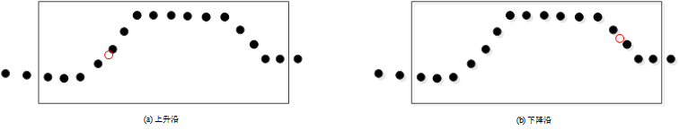

对轮廓数据中特定检测区域内的特征点进行定位。图1所示为检测区域内X最小值点。
| 分类 | 参数名称 | 参数描述 |
|---|---|---|
| 属性窗口 | 定位跟随 | 选“是”，可以链接二维线性变换，ROI区域随二维线性变换变化。 |
| ROI类型 | 检测区域，分为3种：整幅图像、矩形、仿射矩形。 | |
| 特征类型 | 轮廓数据的特征大类型，分为5种：一般特征点、线段特征点、方向特征点、边沿特征点、拐点特征点。 | |
| 一般特征 | 特征类型为一般特征点时该参数有效，分为6种：Z最大、Z最小、X最大、X最小、均值、中值。 |
|
| 线段特征 | 特征类型为线段特征点时该参数有效，分为4种：线段正向、线段反向、左垂直、右垂直。 |
|
| 方向 | 特征类型为方向特征点时该参数有效，取值范围[-180, 180]，单位：角度。 |
|
| 边沿特征 | 特征类型为边沿特征点时该参数有效，分为3种：上升沿、下降沿、任意。 |
|
| 拐点特征 | 特征类型为拐点特征点时该参数有效，分为3种：峰拐点、谷拐点、任意。 |
|
| 锐度阈值类型 | 分为两种：绝对锐度阈值和相对锐度阈值。 | |
| 相对阈值锐度 | 特征类型为拐点特征点时该参数有效，锐度阈值的百分比，即相对锐度阈值=绝对锐度阈值/锐度值最大值。 | |
| 绝对阈值锐度 | 特征类型为拐点特征点时该参数有效，待检测拐点锐度值的绝对值需大于锐度阈值，否则该拐点将检测不到。 | |
| 滤波半宽 | 特征类型为边沿特征点、拐点特征点时该参数有效，用于滤除噪声。 | |
| 拐点索引 | 特征类型为拐点特征点时该参数有效，索引设置的范围为[0, CornerNum-1]，CornerNum为有效拐点数量。 | |
| 排序准则 | 特征类型为拐点特征点时该参数有效，分为3种：从左到右、从右到左、幅值，根据所选的准则对检测到的拐点进行排序。 | |
| 图像窗口 | 轮廓图像 | 显示待检测的轮廓图像。 |
| 检测区域 | 显示待检测区域。 | |
| 数据链 | 输入轮廓数据 | 输入待检测的轮廓图像的轮廓数据，该参数来源于截面生成工具的输出轮廓数据参数。 |
| 高级界面 | 同属性窗口参数。 |
| 分类 | 参数名称 | 参数描述 |
|---|---|---|
| 监视窗口 | 输入轮廓数据 | 输入待检测的轮廓图像的轮廓数据，包括轮廓点数，有效点数。 |
| 特征点坐标 | 检测区域内特征点的二维坐标信息。 | |
| 执行结果 | 工具执行结果。 | |
| 执行时间 | 工具执行时间。 | |
| 图像窗口 | 轮廓图像 | 显示待检测的轮廓图像。 |
| 数据链 | 同监视窗口参数，供后续工具使用。 |
轮廓特征点提取工具主要分为以下四个步骤
Step 1 设置检测区域和轮廓数据特征大类型 为了获取轮廓数据特征点的二维坐标信息，需要设置检测区域和轮廓数据的特征大类型。其中，检测区域分为3种：整幅图像、矩形和仿射矩形，而轮廓数据的大特征类型分为5种：一般特征点，线段特征点，方向特征点，边沿特征点和拐点特征点。
Step 2 设置轮廓数据的具体特征类型及参数 根据Step1设置的特征大类型，需对不同特征大类型下的具体特征类型及其相关的参数进行设定。
特征大类型为一般特征点时，需要对一般特征点的具体特征类型进行设置。其中，具体特征类型分为6种：Z最大、Z最小、X最大、X最小、均值、中值。
Z最大值：检测区域内所有轮廓数据（X,Z）中Z坐标最大所对应的轮廓数据的坐标信息。
Z最小值：检测区域内所有轮廓数据（X,Z）中Z坐标最小所对应的轮廓数据的坐标信息。
X最大值：检测区域内所有轮廓数据（X,Z）中X坐标最大所对应的轮廓数据的坐标信息。
X最小值：检测区域内所有轮廓数据（X,Z）中X坐标最小所对应的轮廓数据的坐标信息。
均值：检测区域内所有轮廓数据（X,Z）的均值。
中值：检测区域内所有轮廓数据（X,Z）的中值。
鲁棒性最高点：检测区域内所有轮廓数据（X,Z）的中值。
稳定性最高点：先获取检测区域内的均值特征点，再在中值特征点的邻域半径+高度阈值限定的区域内获取均值特征点，即为稳定性最高点。
统计阈值最高点：检测区域里边的轮廓数据的Z坐标值做直方图统计（正常数据，点较集中；噪声点，点数少），通过点数阈值，过滤掉噪声点，然后求同一个区间里边的轮廓点的X、Z均值，获得候选点；再在候选点的邻域半径+高度阈值限定的范围内，求这个范围内的均值，得到统计阈值最高点。
Z方向稳定性最高点：统计阈值最高点的一种。
拟合最高点：在参数链输入候选特征点，并在候选特征点的邻域半径+高度阈值限定的范围内进行最小二乘拟合抛物线，抛物线的顶点即为拟合最高点。
特征大类型为线段特征点时，需要对线段特征点的具体特征类型以及线段参数进行设置。其中，线段特征点的具体特征类型分为4种：线段正向、线段反向、左垂直、右垂直。而线段参数的设置是通过Edit视图中的线段ROI来进行的。
线段正向：设参考线段的角度为θ，将坐标系oxy逆时针旋转θ形成新的坐标系oxy。线段正向特征点的定义为：将检测区域内的轮廓数据从坐标系oxy变换到坐标系oxy中，并选择在坐标系oxy中X值最大所对应的轮廓数据作为线段正向特征点。具体的效果如图2(a)中的实心红点所示。
线段反向：设参考线段的角度为θ，将坐标系oxy逆时针旋转θ形成新的坐标系oxy。线段反向特征点的定义为：将检测区域内的轮廓数据从坐标系oxy变换到坐标系oxy中，并选择在坐标系oxy中X值最小所对应的轮廓数据作为线段反向特征点。具体的效果如图2(b)中的实心红点所示。
左垂直：设参考线段的角度为θ，将坐标系oxy逆时针旋转θ形成新的坐标系oxy。左垂直特征点的定义为：将检测区域内的轮廓数据从坐标系oxy变换到坐标系oxy中，并选择在坐标系oxy中Z值最大所对应的轮廓数据作为左垂直特征点。具体的效果如图2©中的实心红点所示。
右垂直：设参考线段的角度为θ，将坐标系oxy逆时针旋转θ形成新的坐标系oxy。右垂直特征点的定义为：将检测区域内的轮廓数据从坐标系oxy变换到坐标系oxy中，并选择在坐标系oxy中Z值最小所对应的轮廓数据作为右垂直特征点。具体的效果如图2(d)中的实心红点所示。
特征大类型为方向特征点时，需要对方向信息进行设置。方向信息采用角度方式进行输入。
方向：给定角度θ，计算检测区域内所有轮廓数据的特征值x·cosθ+z·sinθ。然后将特征值最大所对应的轮廓数据作为方向特征点，如图3中的实心红点所示。
特征大类型为边沿特征点时，需要对边沿特征点的具体类型、相对锐度阈值进行设置。其中，边沿特征点的具体类型分为3种：上升沿、下降沿、任意。相对锐度阈值设置参考拐点特征点的相对锐度阈值。

上升沿：检测区域内所有轮廓数据的上升边缘中二阶微分为0的点，如图4(a)中的空心红点所示。
下降沿：检测区域内所有轮廓数据的下降边缘中二阶微分为0的点，如图4(b)中的空心红点所示。
任意沿：检测区域内所有轮廓数据的上升沿或者下降沿特征点。
特征大类型为拐点特征点时，需要对拐点特征点的具体类型、相对锐度阈值和索引进行设置。其中拐点特征点的具体类型分为3种：峰拐点、谷拐点、任意；索引设置的范围为[0, CornerNum-1]，CornerNum为有效拐点数量。锐度阈值设置的基本原则为：待检测拐点锐度值的绝对值需大于锐度阈值，否则该拐点将检测不到。
拐点：检测区域内所有轮廓数据中斜率发生改变的点，如图5(a)中的实心红点所示。
峰拐点：检测区域内所有轮廓数据的所有拐点中向上凸的拐点，如图5(b)中的实心红点所示。
谷拐点：检测区域内所有轮廓数据的所有拐点中向下凹的拐点，如图5©中的实心红点所示。
Step 3 执行测量和输出结果 在设置好检测区域，轮廓数据特征大类型，具体特征类型及参数之后，就可以执行测量了。输出的结果包括，特征点的二维坐标信息。
无
参见“\Samples\3D\深度图\3D测量工具.gvp”。